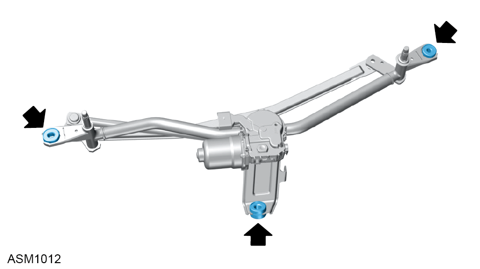

Wiper Motor & Linkage Assembly - LHD
Print
Operation Code: 17.21.01-02
Removal
- Remove front wheelarch liner left side. Refer to procedure.
NOTE: Remove left side wheelarch liner for LHD vehicles or right side wheelarch liner for RHD vehicles.
- Remove radiator outlet duct left side. Refer to procedure.
- Remove radiator outlet duct right side.
NOTE: Procedure is the same for left side component.
- Place wiper motor in parked position.
- Remove scrivets (x3) securing HVAC air inlet to vehicle.
- Remove M5x12 bolts (x2) and washers (x2) securing HVAC air inlet to vehicle.
- Remove HVAC air inlet.
- Manually move wiper arms to the vertical position.
- Remove wiper arm left side. Refer to procedure.
- Remove wiper arm right side.
- Remove front access panel grille frame. Refer to procedure.
- Remove M6x25 bolts and washers (x2) securing cowl to vehicle. Torque 5 Nm.
- Remove cowl from vehicle
- Disconnect harness connector from wiper motor.
- Remove M6x30 bolts (x2) and M6x40 bolt and washers securing wiper motor and linkage assembly to to wiper motor mid mounting bracket and upper dash panel bracket. Torque 10 Nm.
- Remove wiper motor and linkage assembly.
NOTE: Wiper motor must be in the service position.
Do not carry out further disassembly if removing for access only.

- Remove rubber bushings (x3) from wiper linkage assembly.
- Remove bolts (x2) securing wiper motor to bracket.
- Remove bracket.
Installation
- Installation is the reverse of removal procedure except for the following:
NOTE: When harness connector is connected the wiper motor will move to the parked position after 2-5 seconds.
- Switch on ignition to allow the wiper motor to automatically calibrate the home position.